scipy.spatial.distance.cdist¶
- scipy.spatial.distance.cdist(XA, XB, metric='euclidean', p=2, V=None, VI=None, w=None)[source]¶
Computes distance between each pair of the two collections of inputs.
The following are common calling conventions:
Y = cdist(XA, XB, 'euclidean')
Computes the distance between
 points using
Euclidean distance (2-norm) as the distance metric between the
points. The points are arranged as
points using
Euclidean distance (2-norm) as the distance metric between the
points. The points are arranged as
 -dimensional row vectors in the matrix X.
-dimensional row vectors in the matrix X.Y = cdist(XA, XB, 'minkowski', p)
Computes the distances using the Minkowski distance (
 -norm) where 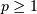.
-norm) where 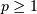.Y = cdist(XA, XB, 'cityblock')
Computes the city block or Manhattan distance between the points.
Y = cdist(XA, XB, 'seuclidean', V=None)
Computes the standardized Euclidean distance. The standardized Euclidean distance between two n-vectors u and v is
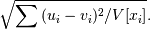
V is the variance vector; V[i] is the variance computed over all the i’th components of the points. If not passed, it is automatically computed.
Y = cdist(XA, XB, 'sqeuclidean')
Computes the squared Euclidean distance 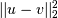 between the vectors.
Y = cdist(XA, XB, 'cosine')
Computes the cosine distance between vectors u and v,
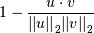
where is the 2-norm of its argument *, and is the dot product of and .
Y = cdist(XA, XB, 'correlation')
Computes the correlation distance between vectors u and v. This is
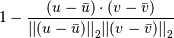
where
 is the mean of the elements of vector v,
and 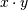 is the dot product of
is the mean of the elements of vector v,
and 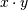 is the dot product of  and
and  .
.Y = cdist(XA, XB, 'hamming')
Computes the normalized Hamming distance, or the proportion of those vector elements between two n-vectors u and v which disagree. To save memory, the matrix X can be of type boolean.
Y = cdist(XA, XB, 'jaccard')
Computes the Jaccard distance between the points. Given two vectors, u and v, the Jaccard distance is the proportion of those elements u[i] and v[i] that disagree where at least one of them is non-zero.
Y = cdist(XA, XB, 'chebyshev')
Computes the Chebyshev distance between the points. The Chebyshev distance between two n-vectors u and v is the maximum norm-1 distance between their respective elements. More precisely, the distance is given by
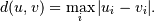
- Y = cdist(XA, XB, 'canberra')
Computes the Canberra distance between the points. The Canberra distance between two points u and v is
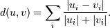
- Y = cdist(XA, XB, 'braycurtis')
Computes the Bray-Curtis distance between the points. The Bray-Curtis distance between two points u and v is
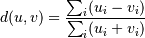
- Y = cdist(XA, XB, 'mahalanobis', VI=None)
Computes the Mahalanobis distance between the points. The Mahalanobis distance between two points u and v is 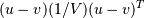 where 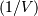 (the VI variable) is the inverse covariance. If VI is not None, VI will be used as the inverse covariance matrix.- Y = cdist(XA, XB, 'yule')
Computes the Yule distance between the boolean vectors. (see yule function documentation)- Y = cdist(XA, XB, 'matching')
Computes the matching distance between the boolean vectors. (see matching function documentation)- Y = cdist(XA, XB, 'dice')
Computes the Dice distance between the boolean vectors. (see dice function documentation)- Y = cdist(XA, XB, 'kulsinski')
Computes the Kulsinski distance between the boolean vectors. (see kulsinski function documentation)- Y = cdist(XA, XB, 'rogerstanimoto')
Computes the Rogers-Tanimoto distance between the boolean vectors. (see rogerstanimoto function documentation)- Y = cdist(XA, XB, 'russellrao')
Computes the Russell-Rao distance between the boolean vectors. (see russellrao function documentation)- Y = cdist(XA, XB, 'sokalmichener')
Computes the Sokal-Michener distance between the boolean vectors. (see sokalmichener function documentation)- Y = cdist(XA, XB, 'sokalsneath')
Computes the Sokal-Sneath distance between the vectors. (see sokalsneath function documentation)- Y = cdist(XA, XB, 'wminkowski')
Computes the weighted Minkowski distance between the vectors. (see sokalsneath function documentation)- Y = cdist(XA, XB, f)
Computes the distance between all pairs of vectors in X using the user supplied 2-arity function f. For example, Euclidean distance between the vectors could be computed as follows:
dm = cdist(XA, XB, lambda u, v: np.sqrt(((u-v)**2).sum()))
Note that you should avoid passing a reference to one of the distance functions defined in this library. For example,:
dm = cdist(XA, XB, sokalsneath)
would calculate the pair-wise distances between the vectors in X using the Python function sokalsneath. This would result in sokalsneath being called 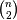 times, which is inefficient. Instead, the optimized C version is more efficient, and we call it using the following syntax.:
dm = cdist(XA, XB, 'sokalsneath')
Parameters : XA : ndarray
An by
array of
original observations in an -dimensional space.XB : ndarray
An by
array of
original observations in an -dimensional space.metric : string or function
The distance metric to use. The distance function can be ‘braycurtis’, ‘canberra’, ‘chebyshev’, ‘cityblock’, ‘correlation’, ‘cosine’, ‘dice’, ‘euclidean’, ‘hamming’, ‘jaccard’, ‘kulsinski’, ‘mahalanobis’, ‘matching’, ‘minkowski’, ‘rogerstanimoto’, ‘russellrao’, ‘seuclidean’, ‘sokalmichener’, ‘sokalsneath’, ‘sqeuclidean’, ‘wminkowski’, ‘yule’.
w : ndarray
The weight vector (for weighted Minkowski).
p : double
The p-norm to apply (for Minkowski, weighted and unweighted)
V : ndarray
The variance vector (for standardized Euclidean).
VI : ndarray
The inverse of the covariance matrix (for Mahalanobis).
Returns : Y : ndarray
A by distance matrix is returned. For each
 and
and  , the metric
dist(u=XA[i], v=XB[j]) is computed and stored in the
, the metric
dist(u=XA[i], v=XB[j]) is computed and stored in the
 th entry.
th entry.Raises : An exception is thrown if ``XA`` and ``XB`` do not have
the same number of columns.